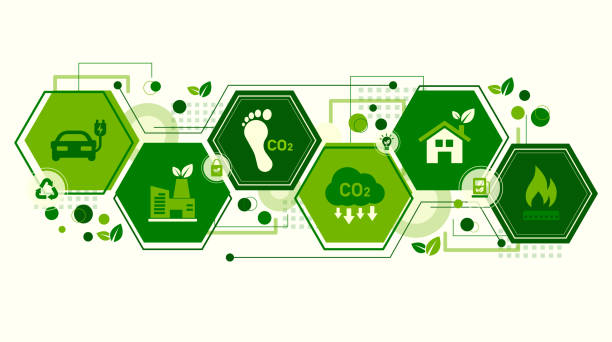

3.3. Herramientas de cálculo de huella digital
Para comprender y gestionar el impacto ambiental de nuestras actividades digitales, existen diversas herramientas y calculadoras diseñadas para estimar nuestra "huella digital" o, más específicamente, la huella de carbono asociada a nuestro uso de la tecnología.
¿Qué miden estas herramientas?
Estas herramientas buscan cuantificar las emisiones de gases de efecto invernadero (principalmente CO2e) generadas por nuestro consumo de servicios digitales y el uso de dispositivos electrónicos. Consideran factores como:
- El consumo de energía de nuestros dispositivos (ordenadores, smartphones, tablets).
- El uso de internet: navegación web, correo electrónico, redes sociales.
- El streaming de contenido multimedia (video, música).
- El almacenamiento de datos en la nube o en servidores.
- La energía consumida por la infraestructura de red y los centros de datos que soportan estas actividades.
Algunas calculadoras también pueden tener en cuenta el impacto de la fabricación y disposición de los dispositivos, aunque a menudo el enfoque principal está en la fase de uso y la energía asociada a la transmisión y procesamiento de datos.
¿Cómo funcionan?
Generalmente, estas herramientas solicitan al usuario que introduzca datos sobre sus hábitos digitales, como el número de horas que utiliza ciertos dispositivos al día, la cantidad de correos electrónicos que envía o recibe, las horas de streaming, la cantidad de datos almacenados en la nube, etc.. Utilizando metodologías y factores de emisión preestablecidos (a menudo basados en promedios del consumo de energía de la infraestructura TIC), la herramienta calcula una estimación de la huella de carbono anual asociada a esas actividades.
Es importante tener en cuenta que los resultados proporcionados por estas calculadoras son estimaciones y pueden variar dependiendo de la metodología utilizada, la precisión de los datos de entrada y los factores de emisión específicos de la región o proveedor de servicios.
Utilidad de las herramientas de cálculo
Estas herramientas son útiles por varias razones:
- Concienciación: Ayudan a los usuarios a visualizar el impacto ambiental de sus hábitos digitales diarios.
- Identificación de áreas de mejora: Permiten identificar qué actividades digitales son las más intensivas en carbono, lo que puede guiar acciones para reducir el impacto.
- Motivación para el cambio: Al ver el impacto cuantificado, los usuarios pueden sentirse más motivados a adoptar prácticas digitales más sostenibles.
- Seguimiento del progreso: Algunas herramientas permiten realizar un seguimiento de la huella digital a lo largo del tiempo para evaluar el impacto de los cambios de hábitos.
Ejemplos de herramientas
Existen diversas herramientas y calculadoras para estimar la huella digital y de carbono asociada al uso de la tecnología, tanto a nivel personal como para evaluar el impacto de servicios específicos. Algunos ejemplos incluyen:
- Calculadora de Huella Ecológica de Global Footprint Network: Aunque más amplia, incluye el impacto del consumo energético asociado a la tecnología.
- Calculadoras de Emisiones Digitales (como las ofrecidas por Small99): Centradas específicamente en el impacto de actividades como el correo electrónico, almacenamiento en la nube, y reuniones virtuales.
- Calculadoras de Huella de Carbono (como ClimateHero o las de Carbon Trust): Permiten calcular la huella de carbono personal, a menudo incluyendo el uso de dispositivos y servicios digitales.
- Website Carbon Calculator (como WebsiteCarbon.com): Herramientas para estimar la energía y emisiones asociadas a la carga y uso de un sitio web.
- Herramientas para empresas (como Dcycle, Emitwise, etc.): Aunque más complejas y orientadas al ámbito corporativo, existen herramientas para medir la huella de carbono de la infraestructura y operaciones de TI a gran escala.